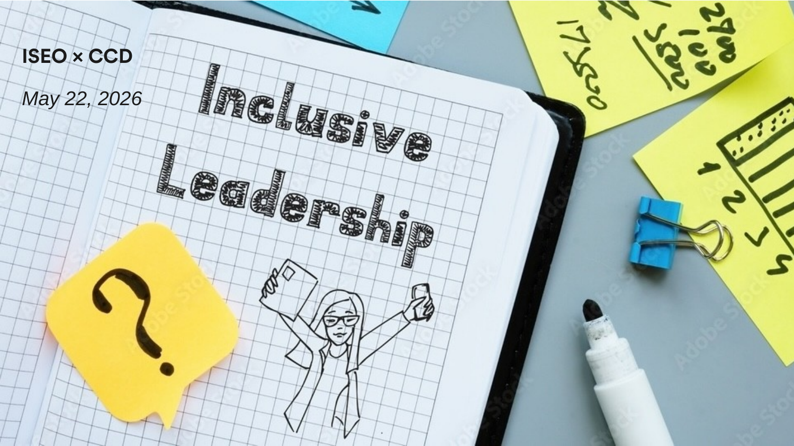
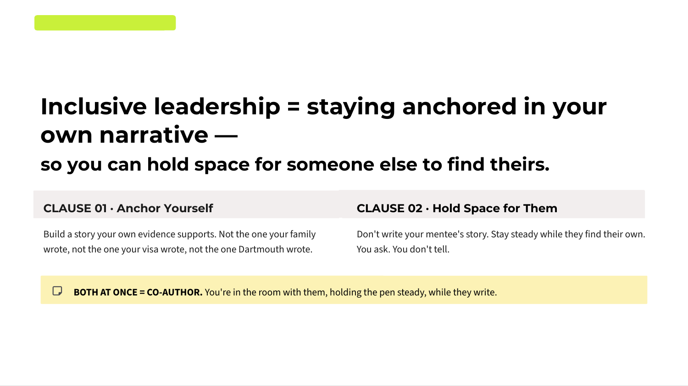
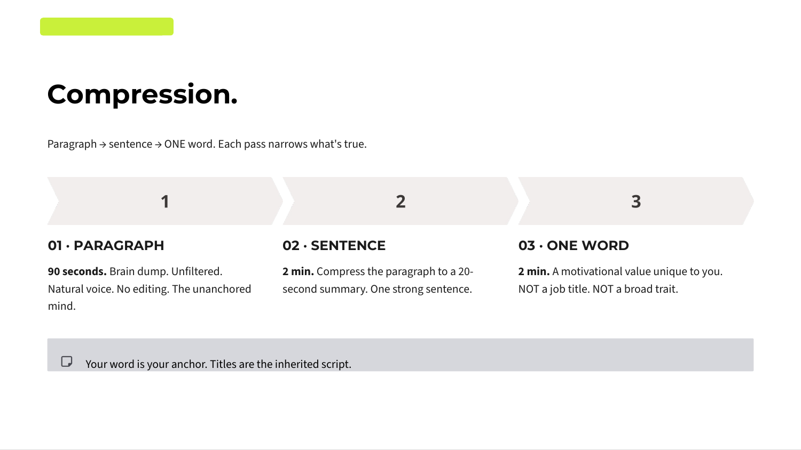
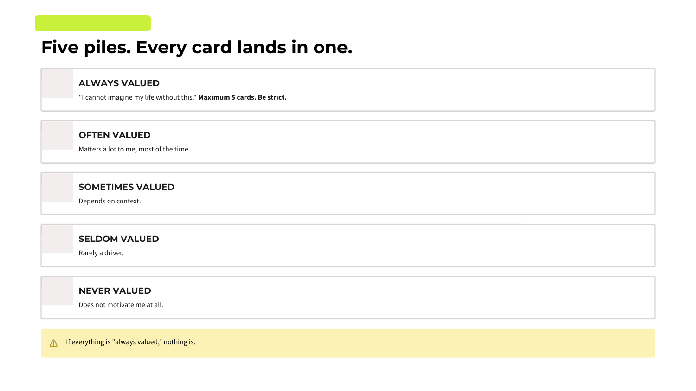
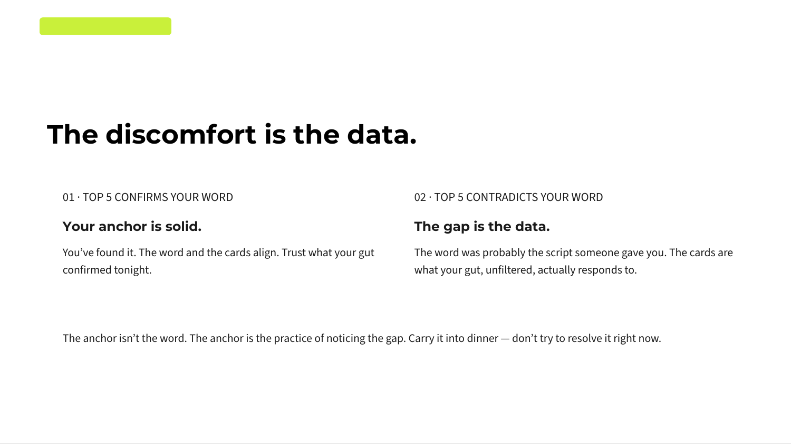
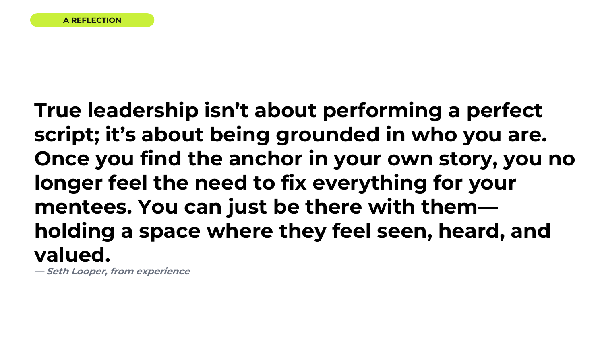

Inclusive Leadership Lab
- Author
- Seth Looper
- My role
- Lead designer and facilitator, as Dartmouth staff
- Program
- Run by Dartmouth's International Student Experience Office (ISEO) and the Career Design Lab
- Setting
- A Dartmouth program the author designed and ran as staff; no institutional endorsement implied
- Date
- May 22, 2026
- Companion field note
- Anchor, then hold space
- Format
- Two-hour workshop · 41 slides · 3-page worksheet
- Audience
- International undergraduate peer mentors preparing for fall mentor-mentee match introductions
- Status
- Single delivery
- Addresses
- RQ 3 · RQ 5
- Source frameworks
- Burnett & Evans Life Design; Knowdell Career Values; McAdams's narrative identity
- Methods used
- Narrative compression, Card-sort triangulation, Peer conversation
What this report argues, how far the evidence goes (not far: one delivery, no evaluation), and what would settle it.
The default frame for inclusive leadership is competency: cultural intelligence, openness, bias mitigation, collaboration. Things a leader has. The framing is useful for hiring and assessment, but it leaves a specific question unanswered: what does the leader do, in the room, when the person across from them is anxious?
For international undergraduate peer mentors at Dartmouth, the answer to that question matters in a particular way. Mentors are about to begin match-introductions with first-year international students. The mentee is often the harder party in the room: adjusting to a new culture, a new language, sometimes a visa story they can't talk about. The mentor's competency list won't help if the mentee retreats into silence.
An informal pre-workshop check-in, run by the program, shaped which modules got emphasis; its responses are not reported here.

A two-hour workshop in three acts: an invitation, an anchor build, an offering. The central reframe sits at the boundary between acts one and two: inclusive leadership is staying anchored in your own narrative so that you can hold space for someone else to find theirs. Two clauses, both required: a mentor who is anchored but not listening, or listening but not anchored, has only half of the stance.
An originally-planned fourth module, a question-only roleplay practice block, was cut for time. The cut is named in the closing slides.


The workshop recombines two pieces from my earlier projects, redirected at a different developmental task. The compression operation (paragraph to sentence to single word) comes from Narrative by Design, where it supports career narrative discovery. The values-test discipline (Knowdell card sort, top five forced) comes from the Career Design Lab program, where it grounds identity work in evidence. The Inclusive Leadership Lab uses both, but points them at a mentor population preparing to hold space rather than at students preparing to find direction.
The theoretical frame for that redirection rests on four pieces. Burnett & Evans's Designing Your Life (2016) is the source of the Odyssey Plan in M3; the workshop adapts the format for mentor purpose rather than personal direction. Dan McAdams's narrative identity theory (McAdams, 1993) grounds the compression sequence: identity as the story a person edits and re-edits, with prioritization as the editing operation. Lee Shulman's signature pedagogies (2005) frames the workshop's reliance on group facilitation, table share, and structured peer dialogue as a domain-appropriate teaching form. The inclusive leadership literature (Bourke & Espedido, 2019; Hewlett et al., 2013) is the frame the workshop revises, recasting a competency cluster as a relational stance.
My Anchor, then hold space field note develops the pedagogical claim more directly. The Compression as a method note traces the compression operation across multiple projects.


The workshop was delivered once, on May 22, 2026. No post-workshop evaluation was conducted.
The artifact is the design rationale: the deck, the worksheet, and the iteration history (V1 through delivery, including draft feedback and a specific Q3 reversion). The replicability claim is on the design vocabulary, not on the outcomes: practitioners building leadership workshops for non-native-English-speaking undergraduate audiences can borrow the ESL-conscious design moves, the anchor-and-hold-space reframe, and the Compression + Card Sort sequence.
The design rationale is posted as Working Report 2026-07.

Looper, S. (2026). Anchor and Hold Space: Inclusive Leadership as Narrative Co-Authorship in a Two-Hour Workshop for International Undergraduate Peer Mentors. Lo/Be Lab Working Reports, 2026-07. [pdf]
A design-rationale paper documenting the workshop's architecture, the iteration history, and the five contributions the workshop offers as a replicable design vocabulary. The workshop was delivered once and no post-workshop evaluation was conducted. See the companion field note: Anchor, then hold space.
Material on this site may be cited and reused under CC BY-NC 4.0, with credit to Lo/Be Lab.
For citation requests, collaborations, or pushback on a published claim, seth.looper@gmail.com. Site licensed under CC BY-NC 4.0.